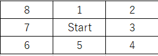

Game Start
フィールド番号
- その他 → ルール守ってないマップ
- ルール守ってないマップ
- ルール守ってるマップ
行き先の入力
8方位を１～８で表す

エージェントの数を変更する方法
gameフォルダ内のfunction.jsの15,16行目を書き換えると出来る
<例>
- agentsAはオレンジ、agentsBは青のエージェントの変数
- { x座標 : y座標 } の順で座標を書くとそこにエージェントが置かれる。座標は左上が { 0 : 0 }
- 左右対称かどうかの判定機能は無いので自分で注意してネ！！